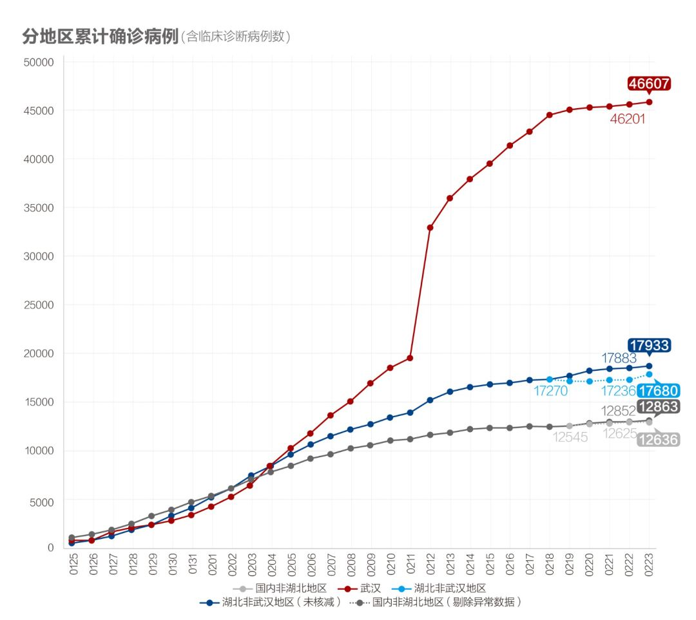
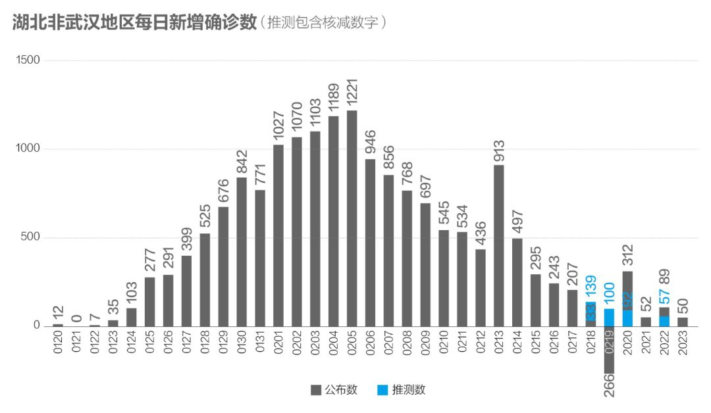
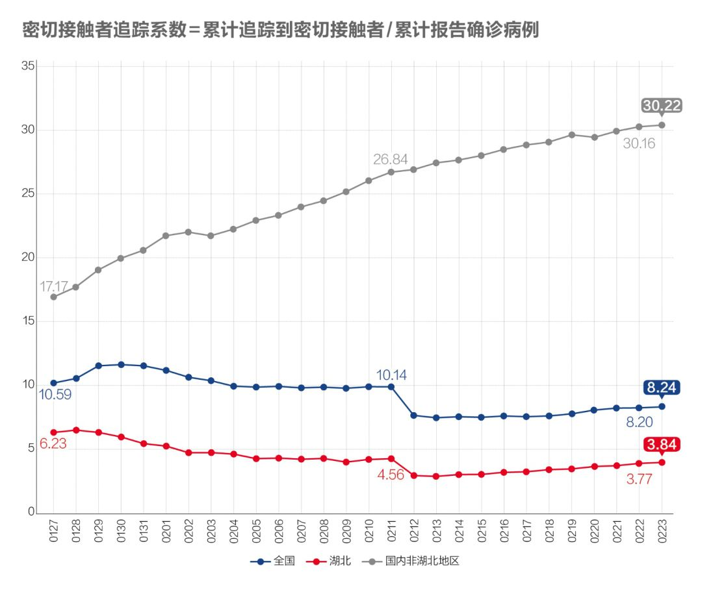
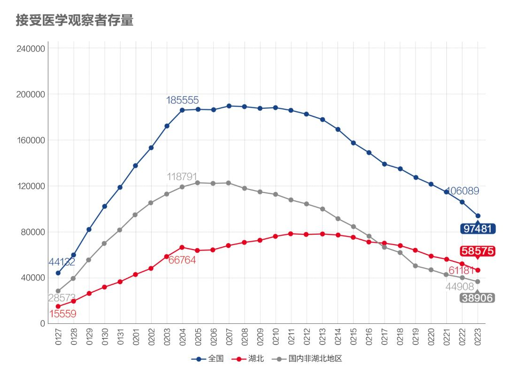
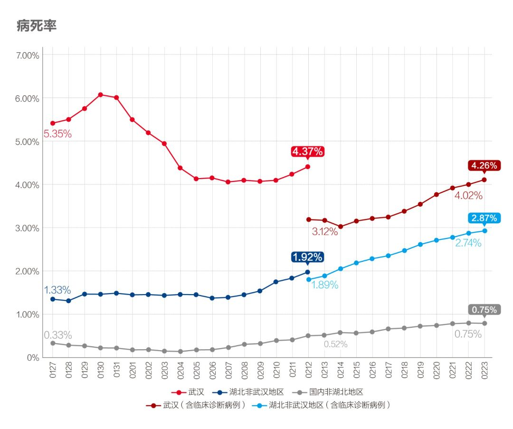

数说疫情0223：北京昨日首现零新增！湖北以外地区疫情得到遏制
原文链接 备份链接 全国21省份22日零新增，抗疫战果继续巩固。此前我们预测湖北疑似病例存量，在拉网排查取得成功后会于22日开始下降，最新数据确实印证了该预测 文 |《财经》数据研究员 徐进 图 |《财经》视觉中心 编辑 | 谢丽容 …

全国多数省区已实现“零新增”，统计上未见疫情卷土重来证据，也未发现意味着疫情死灰复燃的个案
文/《财经》数据研究员徐进
图/《财经》视觉中心
编辑/谢丽容
今天是农历二月二“龙抬头”。按北方农村传统，今起春耕大忙开始，下地干活儿，期盼一个好年景。习主席昨天发表重要讲话部署统筹推进新冠疫情防控和经济社会发展：关于新冠疫情防控讲了七点，再次强调湖北、武汉保卫战和全力做好北京疫情防控；关于经济社会发展讲了八点，其中“复工复产”在两个小标题中出现。小编认真学习领会。下面看看今天的疫情数据。
一、 累计确诊病例：全国总病例数有望控制在8万例左右
截至2月23日24:00，全国累计报告确诊新冠肺炎病例77150例。以下为分区趋势图。

图1.1
红线和黑线显示我们在和“死神”赛跑！

图1.2
武汉以外地区的趋势线平顶已经清晰，目前可以看出：国内非湖北地区累计病例将停留在13000例以内，湖北非武汉地区将在19000例以内，武汉将在48000例左右。最主要的变数是，这个新冠肺炎究竟是像SARS一样不留长尾，还是会如指数函数所示的拖出一条长长的尾巴（最近有专家有此担心）？亦或介于两者之间？目前从非湖北地区数据看很可能不会拖出一条长尾，即便有，也会是很细的一条。
二、 新增病例：全国多数省市零新增，北京连零两日，湖北武汉继续下降

图2
国内非湖北地区新增病例进一步降至11例，平均每省（市区）0.4例。此前出现监狱集中爆发病例的山东、浙江各1例。零新增省市24个，占4/5。北京连续两日“零新增”，这里面有一个重要因素，当当网病例被追踪隔离观察的82人迄今尚无确诊病例。按习主席部署：广大低风险地区要尽快将防控策略调整到外防输入上来，全面恢复生产生活秩序；中风险地区要依据防控形势有序复工复产！

图3
湖北非武汉消化数据调整因素后回到下降轨道。维持向好趋势。

图4
武汉不负期盼，吸纳“尽收尽检尽治尽隔”增量，并消化数据调整因素后再呈下降趋势。据23日新华网，武汉在为期3天的拉网式大排查中。排查、转运、送治“四类人员”3502人。包括：确诊患者559名、疑似患者820名、发热患者283名、密切接触者1840名。与统计数字相印证。
三、 确诊病例增长率：非湖北地区增速进一步“趋零”，湖北及武汉重新确认下降趋势

图5
国内非湖北地区增长率降至0.1%以内。湖北非武汉地区降至0.29%，武汉降至1%以内。确认全面向好趋势。
四、 密切接触者追踪：湖北及武汉的追踪力度强势提升

图6
湖北这个指标还在爬升！近三日的滑动平均数更显示其升势强劲：追踪比已进一步提高到20左右。中央领导在最近讲话中也再次强调动员社区力量做好流调的重要性。

图7
湖北和非湖北地区都在继续下降，意味着可规模化释放更多医疗资源、社会人力资源和隔离空间投入到新的密切接触者追踪隔离上。
五、 疑似病例：增量、存量都在下降

图8
湖北（含武汉）新增疑似病例继21日出现一次高点后连续两日向下，确认武汉“尽收尽查尽治尽隔”努力取得成效。

图9
湖北在拉网排查取得成功后，连续两日下降，印证“拉网筛查”战果。
六、 在院治疗人数：继续成规模释放病床床位

图10
在院治疗人数存量下降，继续成规模释放病床床位。推测出的“湖北确诊未入院”人数仍在下降。
七、 病死率、治愈率

图11
病死率已连续提高三周，看来还会持续。这里有病死发生时间与新确诊增加不同步的因素（非湖北地区），也有救治能力和医疗资源因素（武汉）。

图12
治愈率以更快速度上升。让我们和死神赛跑！
八、新增出院和新增确诊

图13.1新出院人数与新确诊人数

图13.2
新增确诊病例数和新增治愈病例数继续维持剪刀差，核心医疗资源继续得到规模释放。
小结：湖北及武汉数据调整后重新确认向好趋势。全国多数省区已实现“零新增”，统计上未见疫情卷土重来证据，也未发现意味着疫情死灰复燃的个案。可以期待在“毫不放松抓紧抓实抓细防控工作”前提下，“统筹做好经济社会发展各项工作”，落实分区分级精准防控策略，推动企业复工复产将加快。

▲点击图片查看更多疫情报道
责编 | 黄端 duanhuang@caijing.com.cn
本文为《财经》杂志原创文章，未经授权不得转载或建立镜像。如需转载，请在文末留言申请并获取授权。
原文链接 备份链接 全国21省份22日零新增，抗疫战果继续巩固。此前我们预测湖北疑似病例存量，在拉网排查取得成功后会于22日开始下降，最新数据确实印证了该预测 文 |《财经》数据研究员 徐进 图 |《财经》视觉中心 编辑 | 谢丽容 …
原文链接 备份链接 为什么我们说武汉战局出现了反守为攻的转机？主要有3点 文 |《财经》数据研究员 徐进 图 |《财经》视觉中心 编辑 | 谢丽容 一、 累计确诊病例：趋势现“顶” 截至2月21日24:00，全国累计报告确诊新冠肺炎病 …
原文链接 备份链接 _ 武汉新增确诊病例和新增治愈病例今日跨过“黄金交叉”点，从此全国包括武汉在内将逐日加大释放以医院病床床位为核心的医疗资源。但也应注意到2月20日数据出现两个异常：一是非湖北地区新增病例出现巨大反弹；二是国家卫健委与湖 …
原文链接 备份链接 全国武汉以外地区全面向好，期待武汉落实五个“百分之百”终获成功！ 文 |《财经》数据研究员 徐进 图 |《财经》视觉中心 编辑 | 谢丽容 一、 累计确诊病例 截至2月18日24:00，全国累计报告确诊新冠肺炎病 …
原文链接 备份链接 岛语 非常时期，武汉成了全国人民挂念、祈福的城市。封城后，武汉人民的真实生活是什么样？ 武汉在发生哪些变化？ 正和岛自1月26日起特别推出“叶青专栏”。叶青是一位定居武汉40年的市民，也是一名学者和官员。在过往多期的专 …